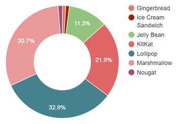

Découvrir la programmation sous Android et apprendre à concevoir des applications complètes.
Nous allons découvrir principalement comment:
Toutes les ressources de cette formation sont disponibles sur:
https://github.com/eldomagan/formation-android
Android est une plateforme open source pour mobile qui fournit un environnement d'exécution pour des applications.
La plateforme android est constitué des éléments suivants:

Le développement sous Android repose essentiellement sur deux éléments:
Le développement sous android se fait essentiellement avec le language Java
Il est donc nécessaire de comprendre les concepts de base du language Java.
// On déclare une classe de cette façon
class MaClasse
{
// Les déclarations de variables et methodes se font ici
}
class Main {
// Variable primitive
int nombre;
// variable objet
Objet instance;
}
class Main {
// Une methode
public void methode() {
// Variable dans une methode
int nombreCarre;
nombreCarre = nombre * nombre;
}
}
abstract class Personne {
protected String nom;
protected String prenom;
public abstract void description();
}
class Developpeur extends Personne {
private String[] languages;
public void description() {
}
}
interface MonInterface {
void maMethode();
}
class Objet implements MonInterface {
void maMethode() {
}
}
Le JDK fournit un environnement de développement pour le Java
http://www.oracle.com/technetwork/java/javase/downloads/jdk8-downloads-2133151.html
Le SDK fournit un environnement de devéloppement qui facilite la tâche.
https://developer.android.com/studio/index.html